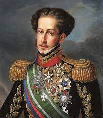

A Monarquia Brasileira refere-se ao período em que o Brasil era uma monarquia, governada por imperadores, Aonde o Brasil tinha uma das maiores economias do Mundo e uma potência no poder militar.
Dom Pedro I foi o primeiro imperador do Brasil, proclamando a independência do Brasil de Portugal em 1822. Ele reinou de 1822 a 1831.
"Independência ou Morte!"
Dom Pedro II: No cenário histórico do Brasil, um nome brilha com intensidade singular, destacando-se como um verdadeiro farol de estabilidade,

"O Brasil não é para principiantes."
A monarquia brasileira chegou ao fim em 1889, com a Proclamação da República, quando o Marechal Deodoro da Fonseca liderou um golpe militar que não tinha conhecimento do povo Brasileiro, que desde então vem só piorando.